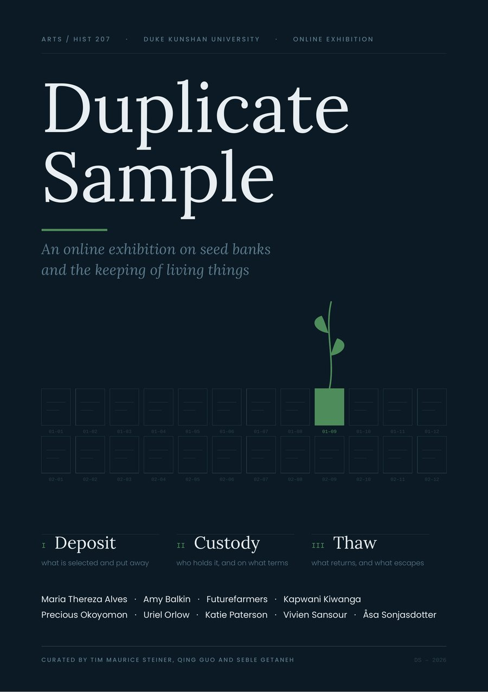
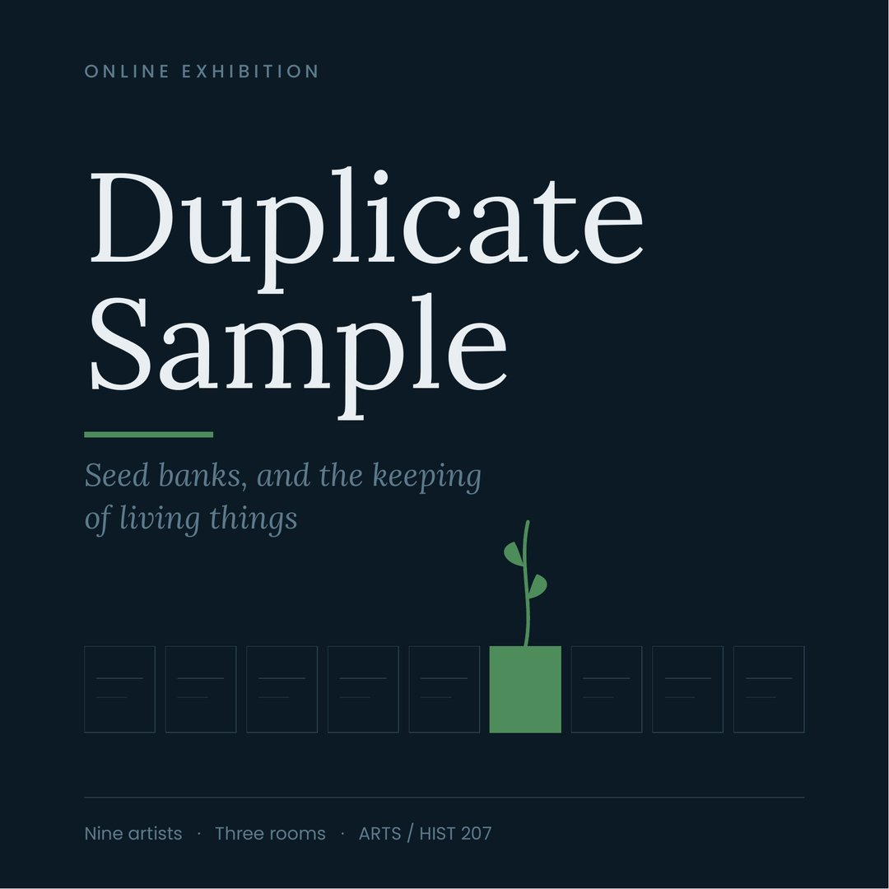

Colophon
How this exhibition was made
Duplicate Sample was curated by Tim Maurice Steiner, Qing Guo and Seble Getaneh for ARTS / HIST 207 · History of Art and Science · Duke Kunshan University, taught by Prof. Rui Hu.
The exhibition is a static site of linked pages. We chose pages over a three-dimensional environment because these works already reach their audiences as documentation, and we would rather present that documentation clearly than rebuild it inside a game engine. The precedent is WE=LINK: Ten Easy Pieces, curated by Zhang Ga at Chronus Art Center Shanghai in 2020 with Rhizome and Art Center Nabi, which presented network-native commissions as web pages.
The spatial design is the descent: three rooms passed through in order, a threshold panel between each, one work per screen, and a depth marker down the right edge. There is no menu inside a room.
Under every work sits a dossier, so the exhibition holds its own material rather than sending visitors away to find it. Each one carries a diagram drawn for this show setting out how that particular collection operates, and a spoken guide of about forty seconds whose transcript is printed on the page whether or not the recording has been made. The artist’s own site appears at the end of the dossier as somewhere to go afterwards, not as the only way to see anything.
The nine diagrams are original drawings by the curators. Every figure in them comes from the verified entry for that work: the twelve manuscripts deposited so far, the forty-seven varieties in Battir, the sixteen floral arrangements, the two refused submissions. None of them invents a number.
The site is hand-written HTML, CSS and JavaScript with no framework and no build step, hosted on GitHub Pages. Type is self-hosted, so the pages load without a single third-party request. Total weight is under two megabytes.
Four things on the site ask something of the visitor rather than only showing them something. The plan on the entrance lets anyone enter at a particular work instead of walking the rooms in order. Every label keeps two of its four fields shut until they are opened, and the site counts how many of the eighteen a visitor has opened, reporting it at the end. The register lays all nine accessions out as an inventory that can be filtered by who is permitted to withdraw, which is where the collection splits into three groups of three. The withdrawal slip lets a visitor write a formal request for any of the material and keep it.
That last one stores nothing. Everything typed into it stays in the visitor’s own browser and is gone when the window closes. A real vault that accepts requests necessarily keeps a register of everyone who asked, and that register is a form of control in its own right. Declining to keep one is the only position this exhibition can take that a seed bank cannot.
Team
- Research and texts
- Tim Maurice Steiner
- Design and identity
- Qing Guo
- Build and media
- Seble Getaneh
- Selection
- All three
Visual identity
The storage box, not the seedling
The identity is drawn from the storage box and the accession label. Everything is cold and rectilinear except one element, which is alive and out of place. Green appears on roughly five per cent of any screen, and it marks only the thing that is alive or escaping.
- #0B1A24
- #E8EEF2
- #5C7A8C
- #4E8C5B
Display and reading type is Lora; labels, field names and accession codes are set in Poppins and a monospace. Both typefaces are used under the SIL Open Font License and are served from this site.
Every work runs under a code in the form DS–I–01, which gives the exhibition an inventory and lets the team refer to works without ambiguity.


Image credits and rights
Where each image comes from
All works remain the property of their artists. Images are reproduced here for a student exhibition and are credited to artist and source on the page where they appear. Where no image has yet been cleared, the page carries a designed placeholder in the exhibition identity rather than a borrowed photograph. The nine diagrams, the nine spoken guides, the poster and the placeholder cards were all made for this exhibition by the curators.
No photograph of the Svalbard Global Seed Vault appears here yet. Two sources are cleared for it. The Norwegian Ministry of Agriculture and Food publishes images by Ole G. Hertzenberg which may be used freely with the photographer credited, and NordGen publishes interior views under a Creative Commons Attribution-NonCommercial licence. Either suits a student exhibition. Until one is added the entrance carries the drawn motif in its place.
- Katie Paterson
- Katie Paterson, Future Library, 2014–2114, Nordmarka forest, Oslo. Courtesy the artist. Reproduced from the artist’s own documentation.
- Åsa Sonjasdotter
- Cultivating Abundance, 2022. No image has been cleared, so the page carries a designed placeholder in the exhibition identity. A still from Cultivating Abundance is available through Filmform, Stockholm.
- Amy Balkin
- A People’s Archive of Sinking and Melting, 2012–ongoing. No image has been cleared, so the page carries a designed placeholder in the exhibition identity. Installation views are held by Southern Exposure, San Francisco.
- Uriel Orlow
- Uriel Orlow, What Plants Were Called Before They Had a Name, since 2015, installation view. Courtesy the artist. Reproduced from the artist’s own documentation.
- Vivien Sansour
- Palestine Heirloom Seed Library, 2014–ongoing. No image has been cleared, so the page carries a designed placeholder in the exhibition identity. Photographs of the library in Battir are held by the Palestine Heirloom Seed Library.
- Futurefarmers
- Futurefarmers, Seed Journey, 2016–ongoing, image from the voyage logbook. Courtesy Futurefarmers. Reproduced from the artist’s own documentation.
- Maria Thereza Alves
- Maria Thereza Alves, Seeds of Change, 1999–ongoing, documentation panel. Courtesy the artist. Reproduced from the artist’s own documentation.
- Precious Okoyomon
- Earthseed, MMK Frankfurt, 2020. No image has been cleared, so the page carries a designed placeholder in the exhibition identity. Installation views of Earthseed are held by MMK Frankfurt.
- Kapwani Kiwanga
- Kapwani Kiwanga, Flowers for Africa: Union of South Africa, 2017, installation view. Courtesy the artist and Goodman Gallery. Reproduced from the artist’s own documentation.
References
Sources
- Tsing, Anna. 2012. “Unruly Edges: Mushrooms as Companion Species.” Environmental Humanities 1: 141–154.
- Fowler, Cary. 2016. Seeds on Ice: Svalbard and the Global Seed Vault. Westport, CT: Prospecta Press.
- Crop Trust. 2020. Svalbard Global Seed Vault: Annual Report. Bonn: Global Crop Diversity Trust.
- Orlow, Uriel. 2018. Theatrum Botanicum. Edited by Shela Sheikh and Uriel Orlow. Berlin: Sternberg Press.
- Lee, Shannon. 2023. “Vivien Sansour Plants Seeds of Hope for Palestine.” The Amp, Asian American Arts Alliance, 18 December.
- Zhang, Ga, ed. 2020. WE=LINK: Ten Easy Pieces. Shanghai: Chronus Art Center, with Rhizome and Art Center Nabi.
- Tsing, Anna, Jennifer Deger, Alder Keleman Saxena and Feifei Zhou. 2020. Feral Atlas: The More-Than-Human Anthropocene. Stanford University Press.